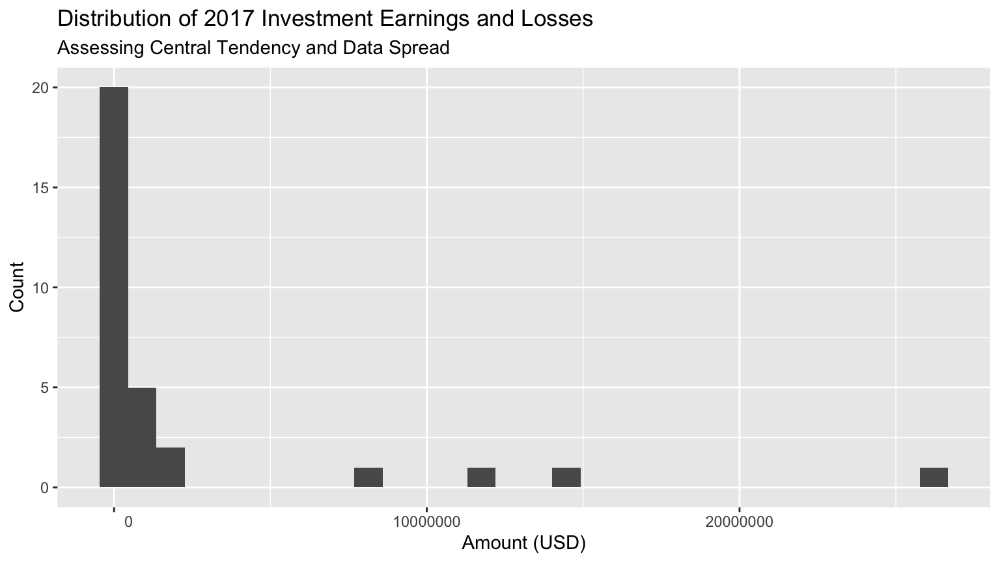

# Load packages
library(dplyr) # data manipulation
library(readr) # scrapes web pages
library(ggplot2) # data visualization
library(janitor) # data manipulation
# Load data
setwd("/Users/michelruiz-fuentes/Desktop/smith-capstone-24/990s_assetallocation")
schedule_d <- read.csv("/Users/michelruiz-fuentes/Desktop/smith-capstone-24/990s_assetallocation/schedule_d_vals.csv") 990s Endowment Funds
0.1 Data Wrangling
0.2 Exploratory Data Analysis
investments17
investments17_summary# A tibble: 129 × 7
ein group_n mean median max min sd
<int> <int> <dbl> <int> <int> <int> <dbl>
1 10420070 1 NA NA NA NA NA
2 20569320 1 NA NA NA NA NA
3 30498652 1 NA NA NA NA NA
4 42312734 1 1506547 1506547 1506547 1506547 NA
5 42773619 1 NA NA NA NA NA
6 46193015 1 NA NA NA NA NA
7 50377245 1 NA NA NA NA NA
8 61478674 1 NA NA NA NA NA
9 61537525 1 NA NA NA NA NA
10 131882106 1 1337748 1337748 1337748 1337748 NA
# ℹ 119 more rows0.3 Asset Allocation
The section on asset allocation will provide a more detailed analysis of endowments, by investigating how their assets are distributed and diversified, examining the breakdown of asset distribution via percentages, and assessing whether the endowment performance trends mimic or deviate the S&P 500 overall performance. Our guiding questions include: a) How are assets allocated across different asset classes in the endowment (stocks, bonds, real estate etc.)? b) Adjustment of endowment in response to the pandemic: b1 How have the choices made within their asset allocation impacted their endowment performance? b2 What percentage of the total endowment S&P 500?
0.4 Perpetuity:
When assessing perpetuity and long-term sustainability of the endowment funds, we will evaluate what investments and factors contributed to their resilience in the midst of economic downturns and market volatility that arose from the pandemic crisis.
0.5 Endowment Types:
Endowment management and purpose: What are the proportion of term endowments, permanent endowments, and board-designated or quasi-endowments? What are the distinctions between the variety of endowment types.
0.6 Capstone 2023 Resources:
endowment_spenddown→ how the endowment is composedendowment_timeseries→ how the endowment has changed - this can be related to the stock market’s changes, S&P 500 trends